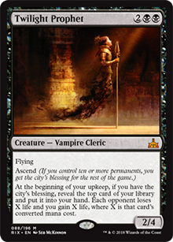
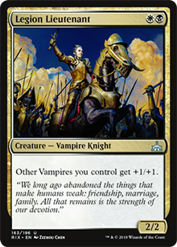
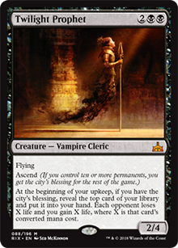
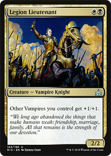

The vampire tribe is once again at the Magic, this time on the Ixalan block. Some vampires are monowhite and part of the Legion of Dusk. They originate in the continent of Torrezon, which is under their control. The expedition forces crossed the sea to Ixalan to retrieve a stolen artifact from them - The Immortal Sun. With this, they hope to confer immortality without the disadvantage of drinking blood for their followers. In addition, Ixalan vampires are apparently unaffected by sunlight, so they can walk freely during the day.
But letting the story go a little and starting for the cards, the Ixalan vampires are present in the colors black and white and are very good at infesting the battlefield with 1/1 tokens with lifelink and gain life points. The strategy is usually quite simple: put so many vampires on the battlefield, that even though they are weak, they can give you hit life points on hit and still do damage to the opponent bit by bit. Many vampires have lifelink, other deathtouch, and others every time they attack each opponent loses 1 life and you gain 1. Putting these facts together with the addition that you have spells to destroy creatures and clear the battlefield, the vampire decks have very good control during the match.
The combos consist of the Legion's Landing/Adanto, the First Fort, Mavren Fein, Dusk Apostle and Call to the Feast which make you stay with a 1/1 vampire tokens with lifelink on the battlefield. With so many tokens on field, you can block large creatures without trample and still gain life with each block, or simply strike and gain life. It's great to have the legendary Legion's Landing enchantment at the first turn, and it's not hard to transform and you'll have a 1/1 vampire with lifelink every turn if you want.
With so many token in the field, you can make several combos. Cards such as Sanctum Seeker and Vicious Conquistador have a good synergy, even if they die after the attacks, they earn you life and the opponents lose additional life points. Speaking of dying creatures, nothing better than after you lose several 1/1 tokens and then put a Bloodcrazed Paladin, entering with X counters +1/+1, plus he has a flash and you can play on the opponent's turn after you block with several 1/1 vampires, leaving him stronger with each kill.

But not all cards make you gain life: Dusk Legion Zealot and Champion of Dusk are VERY good cards, they cause you to lose life, but you get a lot of draws, and in standard draw is very important. You can draw cards of extreme importance to destroy your opponent's creatures, such as Walk the Plank, for example.
 



With the release of RIX, vampires will gain powerful additions, just see the Bishop of Binding, Radiant Destiny, Twilight Prophet and Legion Lieutenant as examples, fit very well on the deck theme, among many others.
So if you like to destroy opponents creatures/trap them with enchantments, gain life and infest battlefields with tokens, you'll surely enjoy the vampire decks, still having the option of leaving it monowhite.
Tallison Vasconcelos